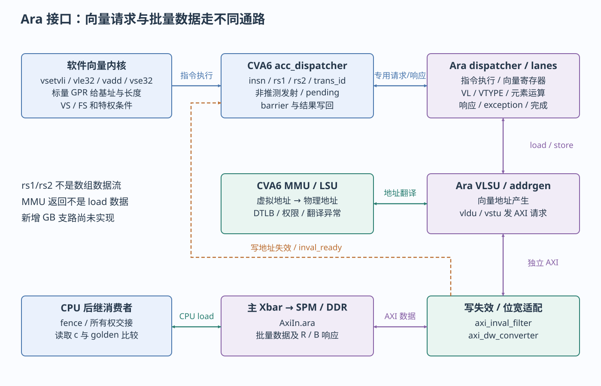

本页目录
本章分开三种软件动作：算术/访存指令、控制状态寄存器访问、向量专用请求。CSR（Control and Status Register，控制与状态寄存器）是处理器内部按指令编码寻址的状态；它没有 UART 那样的 MMIO 基址。
C 运算、机器指令与提交
已有 journey.c 的 make_value(i) 返回 3u*i+seed。编译器可把乘3化为移位加法，把局部临时量放寄存器甚至消去；只有地址可见/必须保存的值才需要内存对象。不能把每个 C 变量对应成一块 SRAM。
从本轮 scalar-build/journey.dump 搜索 <make_value>，可以看到整数运算、读取 seed 和返回；从 <_putchar> 可见内联后的字节读写。CVA6 的 frontend 根据PC发取指请求，经地址转换/I-cache取得机器码；id_stage/decoder解析，issue_stage调度，执行结果按事务ID写回 scoreboard，最后 commit_stage落实架构状态或精确异常。
“软件看到执行完成”由架构提交和指令语义决定，并不意味着所有后续总线写响应已返回。整数加法主要改GPR（通用寄存器），store进入访存/缓存系统，CSR改内部状态，向量指令还有专用完成/在途信息。
三种 RVV 编程入口
RVV（RISC-V Vector，RISC-V 向量扩展）按 vl 个元素执行向量操作；VLEN是每个向量寄存器的位数，lane是硬件执行资源数，二者不同。更改lane不等于直接更改C数组长度。
| 入口 | 仓库已有例子 | 使用条件 |
|---|---|---|
| 显式汇编 | rvv_add.S learn_vadd |
精确控制 vsetvli/vle32/vadd/vse32；调用者负责VS和缓冲区 |
| intrinsic（编译器向量内建函数） | rvv_intrinsics.c | 本机工具链支持对应头文件/API；检查输出指令 |
| 自动向量化 | rvv_auto.c | 循环依赖和编译优化满足条件；使用V编译不保证循环真的向量化 |
| 现有算法 | fmatmul_test_4x4.c、Ara apps | 浮点要求FS，数据布局和工具链也要匹配；打印矩阵不能替代golden比较 |
已有汇编核心如下，这是仓库源码片段，非虚构反汇编：
vsetvli t0, a3, e32, m1, ta, ma
vle32.v v0, (a0)
vle32.v v1, (a1)
vadd.vv v2, v0, v1
vse32.v v2, (a2)
sub a3, a3, t0
slli t1, t0, 2
a0/a1/a2是三个数组的基址，a3是剩余元素数。vsetvli返回本轮实际vl，e32表示32位元素、m1表示一个向量寄存器组；因此指针增量是 vl*4 字节。尾部元素通过再次设置vl处理，不能每轮固定加一个假设的硬件向量长度。v0/v1/v2是Ara向量寄存器，不是CPU GPR，也不是可从AXI寻址的MMIO区域。
CVA6 与 Ara 的请求、翻译和完成

cheshire_soc.sv使用 cva6_to_acc_t / acc_to_cva6_t，把CVA6的 cvxif_req_o/resp_i 接到Ara的 acc_req_i/resp_o。虽然端口名含cvxif，gen_cva6_cfg()把 CvxifEn=0；此组合承载专用加速器/MMU契约，不是通用NPU插槽。
| 阶段 | 定义 → 发送/接收 | 对软件的含义 |
|---|---|---|
| 初步识别 | Ara cva6_accel_first_pass_decoder → CVA6 decoder | 辨别向量指令及VS/FS条件；必须排除CVA6同名stub |
| 发射 | CVA6 acc_dispatcher acc_req_o.acc_req → Ara ara_dispatcher |
非推测发射协调；传递insn、rs1、rs2、frm、trans_id及valid/ready |
| 内部执行 | ara.sv → dispatcher/sequencer/lanes | 向量寄存器和lane执行运算；不由CPU逐元素写Ara寄存器 |
| 标量结果/异常返回 | intf_typedef.svh accelerator_resp_t → CVA6写回/提交 |
result/trans_id/exception/resp_valid关联原指令；fflags更新浮点状态 |
| 向量地址 | vlsu/addrgen.sv → acc_mmu_req → CVA6 load_store_unit |
传虚拟地址和store属性，CVA6返回物理地址/DTLB信息/异常；不是DMA IOMMU |
| 向量数据 | VLSU的vldu/vstu → Ara AXI → filter → DW converter → AxiIn.ara |
Ara自己发AR/AW/W并收R/B；批量数据不经过CPU专用请求的rs1/rs2字段 |
| 在途与排空 | load_complete/store_complete/store_pending → CVA6 acc_dispatcher |
与标量访存、fence/barrier配合；函数ret本身不是总线排空证明 |
访问翻译请求的 CVA6Cfg.VLEN 在此指虚拟地址相关宽度，不能与 Cfg.AraVLEN=2048 的向量寄存器位数混淆。读写的MMU返回错误与外部AXI错误是不同层次；本地 vstu.sv 仍标注B通道错误处理TODO，所以“store_complete出现”不能独自证明所有数据正确。
软件使用Ara需要同时满足：带V的CPU profile、真实译码、SoC Ara使能及合法lane/VLEN、ELF指令集匹配、VS非Off；浮点向量还要FS可用。共享存储要可达且满足可见性规则。OS多任务还需保存/恢复向量状态，不能从一次裸机向量成功推导为抢占正确。
CSR 的访问指令与工程调用
csrr是读CSR的汇编别名，csrw写，csrs/csrc按掩码置/清位。指令携带CSR编号，不产生AXI寄存器地址事务。util.h 的 set_mie(1)使用 csrsi mstatus,8，set_mtie(1)对mie置bit7；get_mcycle()使用 csrr ...,mcycle。与 *reg32(&__base_clint,offset) 会产生访存指令形成对照。
| CSR/字段 | 本地软件使用位置 | RTL消费者与典型修改影响 |
|---|---|---|
mstatus.MIE/SIE |
crt0关闭；util set_mie |
csr_regfile与decoder中断判断；M模式示例需MIE及相应mie都开 |
mie.MTIE / mie.MEIE |
clint_sleep接口；外设ISR初始化需另写MEIE | 定时与PLIC外部中断是不同位；开MTIE不放行PLIC |
mip |
诊断待处理事件 | time_irq_i/ipi_i/irq_i形成待处理条件；不是所有位都能靠写mip清掉 |
mtvec |
crt0设置 _trap_handler_wrap |
trap入口与模式；普通直接模式和CLIC模式要分开 |
mepc/mcause/mtval |
自定义trap诊断；默认处理不解码 | 提交异常写入返回PC/原因/附加值；错误修改mepc会跳错指令 |
mstatus.MPP/MPIE |
trap硬件及 mret |
保存/恢复先前特权和中断使能；mret不清设备pending |
mstatus.FS[14:13] |
crt0设Initial并初始化FP寄存器 | 浮点执行/状态跟踪；FS=Off可触发非法指令 |
mstatus.VS[10:9] |
HelloWorld置位；journey在向量内核前置位 | 允许向量状态使用；仅写VS不证明执行过V指令 |
vl/vtype/vstart |
RVV内核和Ara dispatcher | 当前元素数、类型/组大小和重启位置；与向量上下文相关 |
mcycle |
util、clint_get_core_freq | csr_regfile cycle_q；CPU周期计数，非CLINT RTC tick |
satp |
后续S-mode/Linux；当前crt0未建页表 | load_store_unit/MMU选择Sv39页表；改映射还需相应TLB同步 |
pmpcfg*/pmpaddr* |
当前裸机例不建立完整隔离方案 | 物理内存保护PMP，按Cfg.Cva6NrPMPEntries生成，当前DefaultCfg为0，不能据profile原始值宣称PMP隔离已启用；不能拿C/I/E代替权限 |
medeleg/mideleg、mcounteren/scounteren |
OS/固件移植入口 | 异常/中断委托、低特权读计数器权限；软件栈必须匹配实现 |
CSR_ACC_CONS（0x7c2 bit0） |
当前向量协作依赖其复位开启状态 | csr_regfile acc_cons_en_o → acc_dispatcher/filter；关闭会改变访存协调前提 |
CSR_DCACHE/ICACHE |
平台调试时按本地实现核对 | 本地自定义cache控制CSR；不是通用逐行clean/invalidate API |
具体编码和可写字段以本地csr_regfile.sv及riscv包为准。satp、PMP等这里只建立接口导航，本轮没有新增页表/权限配置程序。
特权与异常的边界
现有裸机按M模式运行。S模式通常承载Linux内核，U模式承载用户进程；向量profile未启用H扩展，不把默认另一个带H的profile能力混进来。低特权代码访问不允许的CSR、写只读CSR、执行未实现指令会进入异常路径；某些已实现的WARL字段（写任意值、读合法值）会约束写入值，因此应读回核对，而不是假定每一非法字段值都trap。
本地csr_regfile通过CSR编码、读写意图、特权及配置控制合法性；MMIO访问则经翻译、PMP/属性和总线目标判定。U-mode代码通常不能直接 csrs mstatus 或访问任意物理寄存器。Linux应通过系统调用/驱动获得服务，不能把裸机指针强转后原样搬到用户程序。
标准背景参见RISC-V 20240411特权规范，用于解释M/S/U、trap状态和CSR访问规则；CLIC及本地自定义CSR仍按当前源码核对，不把规范最新扩展当作现有硬件能力。